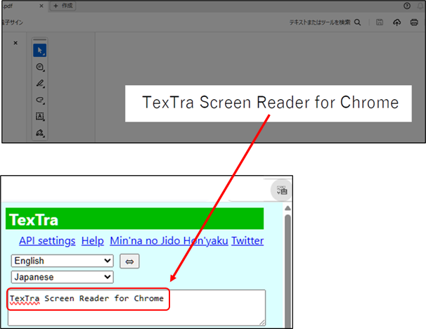

TexTra Screen Reader for Chrome is an
application
that works with the Chrome extension "TexTra Chrome"
and
adds OCR-based text capture feature for
Windows.
Extract text from PDFs and other sources and import it into Chrome via OCR for translation.
